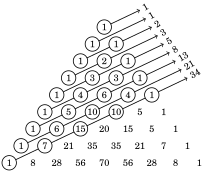

Chapter 10 Mathematical Induction
This chapter explains a powerful proof technique called mathematical induction (or just induction for short). To motivate the discussion, let’s first examine the kinds of statements that induction is used to prove. Consider this statement:
Conjecture The sum of the first n odd natural numbers equals n2.
The following table illustrates what this conjecture says. Each row is headed by a natural number n, followed by the sum of the first n odd natural numbers, followed by n2.
n sum of the first n odd natural numbers n2
1 1 = . . . . . . . . . . . . . . . . . . . . . . . . . . . . . . . . . . . . . 1
2 1 + 3 = . . . . . . . . . . . . . . . . . . . . . . . . . . . . . . . . . 4
3 1 + 3 + 5 = . . . . . . . . . . . . . . . . . . . . . . . . . . . . . . 9
4 1 + 3 + 5 + 7 = . . . . . . . . . . . . . . . . . . . . . . . . . . . 16
5 1 + 3 + 5 + 7 + 9 = . . . . . . . . . . . . . . . . . . . . . . . . 25
... ... ...
n 1 + 3 + 5 + 7 + 9 + 11 +···+ (2n − 1) = . . . . . . n2
... ... ...
Note that in the first five lines of the table, the sum of the first n odd numbers really does add up to n2. Notice also that these first five lines indicate that the nth odd natural number (the last number in each sum) is 2n − 1. (For instance, when n = 2, the second odd natural number is 2 · 2 − 1 = 3; when n = 3, the third odd natural number is 2 · 3 − 1 = 5, etc.)
The table raises a question. Does the sum 1+3+5+7+···+(2n −1) really always equal n2? In other words, is the conjecture true?
Let’s rephrase this. For each natural number n (i.e., for each line of the table), we have a statement Sn, as follows:
S1 : 1 = 12
S2 : 1 + 3 = 22
S3 : 1 + 3 + 5 = 32
...
Sn : 1 + 3 + 5 + 7 +···+ (2n − 1) = n2
...
Our question is: Are all of these statements true?
Mathematical induction answers just this kind of question, where we have an infinite list of statements S1, S2, S3, ... that we want to prove true. The method is really quite simple. To visualize it, think of the statements as dominoes, lined up in a row. Suppose you can prove the first statement S1, and symbolize this as domino S1 being knocked down. Also, say you can prove that any statement Sk being true (falling) forces the next statement Sk+1 to be true (to fall). Then S1 falls, knocking down S2. Next S2 falls, knocking down S3, then S3 knocks down S4, and so on. The inescapable conclusion is that all the statements are knocked down (proved true).
The Simple Idea Behind Mathematical Induction
S1 S2 S3 S4 S5 S6 ··· ···
Statements are lined up like dominoes.
S S S S S S ··· ···
1 2 3 4 5 6 Sk Sk+1 Sk+2 Sk+3 Sk+4
(1) Suppose the first statement falls (is proved true);
S S S S S S S S
1 2 3 4 5 6 ··· k k+1 Sk+2 Sk+3 Sk+4 ···
(2) Suppose the kth falling always causes the (k + 1)th to fall;
S S S S S S S
1 2 3 4 5 6 ··· k +1 +2 +3 ···
Then all must fall (all are proved true).
10.1 Proof by Induction
This domino analogy motivates an outline for our next major proof technique: proof by mathematical induction.
Outline for Proof by Induction
Proposition The statements S1, S2, S3, S4, ... are all true.
Proof. (Induction) (1) Prove that the first statement S1 is true. (2) Given any integer k ≥ 1, prove that the statement Sk ⇒ Sk+1 is true. It follows by mathematical induction that every Sn is true. ■
In this setup, the first step (1) is called the basis step. Because S1 is usually a very simple statement, the basis step is often quite easy to do. The second step (2) is called the inductive step. In the inductive step direct proof is most often used to prove Sk ⇒ Sk+1, so this step is usually carried out by assuming Sk is true and showing this forces Sk+1 to be true. The assumption that Sk is true is called the inductive hypothesis.
Now let’s apply this technique to our original conjecture that the sum of the first n odd natural numbers equals n2. Our goal is to show that for each n ∈ ℕ, the statement Sn : 1 + 3 + 5 + 7 +···+ (2n − 1) = n2 is true. Before getting started, observe that Sk is obtained from Sn by plugging k in for n. Thus Sk is the statement Sk : 1 + 3 + 5 + 7 +···+ (2k − 1) = k2. Also, we get Sk+1 by plugging in k + 1 for n, so that Sk+1 : 1 + 3 + 5 + 7 +···+ (2(k + 1) − 1) = (k + 1)2.
Proposition If n ∈ ℕ, then 1 + 3 + 5 + 7 +···+ (2n − 1) = n2.
Proof. We will prove this with mathematical induction. (1) Observe that if n = 1, this statement is 1 = 12, which is obviously true. (2) We must now prove Sk ⇒ Sk+1 for any k ≥ 1. That is, we must show that
if 1+3+5+7+···+(2k−1) = k2, then 1+3+5+7+···+(2(k+1)−1) = (k+1)2.
We use direct proof. Suppose 1 + 3 + 5 + 7 +···+ (2k − 1) = k2. Then
1 + 3 + 5 + 7 +···············+ (2(k + 1) − 1) =
1 + 3 + 5 + 7 +···+ (2k − 1) + (2(k + 1) − 1) =
(1 + 3 + 5 + 7 +···+ (2k − 1)) + (2(k + 1) − 1) =
k2 + (2(k + 1) − 1) = k2 + 2k + 1
= (k + 1)2.
Thus 1+3+5+7+···+(2(k +1)−1) = (k +1)2. This proves that Sk ⇒ Sk+1. It follows by induction that 1 + 3 + 5 + 7 +···+ (2n − 1) = n2 for every n ∈ ℕ. ■
In induction proofs it is usually the case that the first statement S1 is indexed by the natural number 1, but this need not always be so. Depending on the problem, the first statement could be S0, or Sm for any other integer m. In the next example S0, S1, S2, S3,... are the statements. The same outline is used, except that the basis step verifies S0, not S1.
Proposition If n is a non-negative integer, then 5 | (n5 − n).
Proof. We will prove this with mathematical induction. Observe that the first non-negative integer is 0, so the basis step involves n = 0. (1) If n = 0, this statement is 5 | (05 − 0) or 5 | 0, which is obviously true. (2) Let k ≥ 0. We need to prove that if 5 | (k5 − k), then 5 | ((k + 1)5 − (k + 1)).
We use direct proof. Suppose 5 | (k5 − k). Thus k5 − k = 5a for some a ∈ ℤ.
Observe that
(k + 1)5 − (k + 1) = k5 + 5k4 + 10k3 + 10k2 + 5k + 1 − k − 1
= (k5 − k) + 5k4 + 10k3 + 10k2 + 5k
= 5a + 5k4 + 10k3 + 10k2 + 5k
= 5(a + k4 + 2k3 + 2k2 + k).
This shows (k+1)5−(k+1) is an integer multiple of 5, so 5 | ((k+1)5−(k+1)).
We have now shown that 5 | (k5 − k) implies 5 | ((k + 1)5 − (k + 1)). It follows by induction that 5 | (n5 − n) for all non-negative integers n. ■
As noted, induction is used to prove statements of the form ∀ n ∈ ℕ, Sn. But notice the outline does not work for statements of form ∀ n ∈ ℤ, Sn (where n is in ℤ, not ℕ). The reason is that if you are trying to prove ∀ n ∈ ℤ, Sn by induction, and you’ve shown S1 is true and Sk ⇒ Sk+1, then it only follows from this that Sn is true for n ≥ 1. You haven’t proved that any of the statements S0, S−1, S−2,... are true. If you ever want to prove ∀ n ∈ ℤ, Sn by induction, you have to show that some Sa is true and Sk ⇒ Sk+1 and Sk ⇒ Sk−1.
Unfortunately, the term mathematical induction is sometimes confused with inductive reasoning, which is the process of reaching the conclusion that something is likely to be true based on prior observations of similar circumstances. Please note that mathematical induction—as introduced in this chapter—is a rigorous technique that proves statements with absolute certainty.
To round out this section, we present four additional induction proofs.
n
Proposition If n ∈ ℤ and n ≥ 0, then \(\sum\) i · i! = (n + 1)! − 1.
i=0
Proof. We will prove this with mathematical induction.
0
(1) If n = 0, this statement is \(\sum\) i · i! = (0 + 1)! − 1. The left-hand side is
i=0
0 · 0! = 0, and the right-hand side is 1! − 1 = 0. Thus the equation holds,
as both sides are zero. (2) Consider any integer k ≥ 0. We must show that Sk implies Sk+1. That
is, we must show that
k k+1
\(\sum\) i · i! = (k + 1)! − 1 implies \(\sum\) i · i! = ((k + 1) + 1)! − 1.
i=0 i=0
k
We use direct proof. Suppose \(\sum\) i · i! = (k + 1)! − 1. Observe that
i=0
k+1 k
\(\sum\) i · i! = \(\sum\) i · i! + (k + 1)(k + 1)!
i=0 i=0
= ((k + 1)! − 1) + (k + 1)(k + 1)!
= (k + 1)! + (k + 1)(k + 1)! − 1
= (1 + (k + 1))(k + 1)! − 1
= (k + 2)(k + 1)! − 1
= (k + 2)! − 1
= ((k + 1) + 1)! − 1.
k+1
Therefore \(\sum\) i · i! = ((k + 1) + 1)! − 1.
i=0
n
We have now proved by induction that \(\sum\) i · i! = (n + 1)! − 1 for every integer
i=0
n ≥ 0. ■
In our outline for proof by induction, the inductive step (2) involved proving Sk ⇒ Sk+1. Obviously, you can prove Sn ⇒ Sn+1 instead. (That is, assume the statement is true for n, and show that it is true for n + 1.) Sometimes proving Sn−1 ⇒ Sn is more convenient, and this too is valid. The proofs in the following examples will use the scheme Sk ⇒ Sk+1, but some solutions to odd-numbered exercises will be phrased as Sn ⇒ Sn+1 or Sn−1 ⇒ Sn. Fluency comes with reading and practice.
The next example illustrates a trick that is occasionally useful. You know that you can add equal quantities to both sides of an equation without violating equality. But don’t forget that you can add unequal quantities to both sides of an inequality, as long as the quantity added to the bigger side is bigger than the quantity added to the smaller side. For example, if x ≤ y and a ≤ b, then x+a ≤ y+ b. Similarly, if x ≤ y and b is positive, then x ≤ y+ b. This oft-neglected fact is used in the next proof.
Proposition The inequality 2n ≤ 2n+1 − 2n−1 − 1 holds for each n ∈ ℕ.
Proof. We will prove this with mathematical induction. (1) If n = 1, this statement is 21 ≤ 21+1 − 21−1 − 1, and this simplifies to
2 ≤ 4 − 1 − 1, which is obviously true. (2) Say k ≥ 1. We use direct proof to show that 2k ≤ 2k+1 − 2k−1 − 1 implies
2k+1 ≤ 2(k+1)+1 − 2(k+1)−1 − 1. Suppose 2k ≤ 2k+1 − 2k−1 − 1. Then
2k ≤ 2k+1 − 2k−1 − 1
2(2k) ≤ 2(2k+1 − 2k−1 − 1) (multiply both sides by 2)
2k+1 ≤ 2k+2 − 2k − 2
2k+1 ≤ 2k+2 − 2k − 2 + 1 (add 1 to the bigger side)
2k+1 ≤ 2k+2 − 2k − 1
2k+1 ≤ 2(k+1)+1 − 2(k+1)−1 − 1.
It follows by induction that 2n ≤ 2n+1 − 2n−1 − 1 for each n ∈ ℕ. ■
We next prove that if n ∈ ℕ, then the inequality (1 + x)n ≥ 1 + nx holds for all x ∈ ℝ with x > −1. Thus we will need to prove that the statement
Sn : (1 + x)n ≥ 1 + nx for every x ∈ ℝ with x > −1
is true for every natural number n. This is (only) slightly different from our other examples, which proved statements of the form ∀n ∈ ℕ, P(n), where P(n) is a statement about the number n. This time we are proving something of the form
∀n ∈ ℕ, (∀ x ∈ (−1,∞), P(n, x)),
where the open sentence P(n, x) : (1+ x)n ≥ 1+ nx involves not only n, but also a second variable x. (For the record, the inequality (1 + x)n ≥ 1 + nx is known as Bernoulli’s inequality.)
Proposition If n ∈ ℕ, then (1 + x)n ≥ 1 + nx for all x ∈ ℝ with x > −1.
Proof. We will prove this with mathematical induction. (1) For the basis step, notice that when n = 1 the statement is (1 + x)1 ≥
1 + 1 · x , and this is true because both sides equal 1 + x. (2) Assume that for some k ≥ 1, the statement (1 + x)k ≥ 1 + kx is true for
all x ∈ ℝ with x > −1. From this we need to prove (1 + x)k+1 ≥ 1 + (k + 1)x.
Now, 1 + x is positive because x > −1, so we can multiply both sides of
(1 + x)k ≥ 1 + kx by (1 + x) without changing the direction of the ≥.
(1 + x)k(1 + x) ≥ (1 + kx)(1 + x)
(1 + x)k+1 ≥ 1 + x + kx + kx2
(1 + x)k+1 ≥ 1 + (k + 1)x + kx2
The above term kx2 is positive, so removing it from the right-hand side
will only make that side smaller. Thus we get (1+ x)k+1 ≥ 1+(k +1)x. ■
Next, an example where the basis step involves more than routine checking. (It will be used later, so it is numbered for reference.)
Proposition 10.1 Suppose a1, a2,..., an are n integers, where n ≥ 2. If p is prime and p | (a1 · a2 · a3 ··· an), then p | ai for at least one of the ai.
Proof. The proof is induction on n. (1) The basis step involves n = 2. Let p be prime and suppose p | (a1a2). We
need to show that p | a1 or p | a2, or equivalently, if p ∤ a1, then p | a2.
Thus suppose p ∤ a1. Since p is prime, it follows that gcd(p, a1) = 1. By
Proposition 7.1 (on page 152), there are integers k and ℓ for which
1 = pk + a1ℓ. Multiplying this by a2 gives
a2 = pka2 + a1a2ℓ.
As we are assuming that p divides a1a2, it is clear that p divides the
expression pka2 + a1a2ℓ on the right; hence p | a2. We’ve now proved
that if p | (a1a2), then p | a1 or p | a2. This completes the basis step. (2) Suppose that k ≥ 2, and p | (a1 · a2 ··· ak) implies then p | ai for some ai.
Now let p | (a1 · a2 ··· ak · ak+1). Then p | ((a1 · a2 ··· ak) · ak+1). By what we
proved in the basis step, it follows that p | (a1 · a2 ··· ak) or p | ak+1. This
and the inductive hypothesis imply that p divides one of the ai. ■
Please test your understanding now by working a few exercises.
10.2 Proof by Strong Induction
Sometimes in an induction proof it is hard to show that Sk implies Sk+1. It may be easier to show some “lower” Sm (with m < k) implies Sk+1. For such situations there is a slight variant of induction called strong induction. Strong induction works just like regular induction, except that in Step (2) instead of assuming Sk is true and showing this forces Sk+1 to be true, we assume that all the statements S1, S2, ..., Sk are true and show this forces Sk+1 to be true. The idea is that if the first k dominoes falling always forces the (k + 1)th domino to fall, then all the dominoes must fall.
Outline for Proof by Strong Induction
Proposition The statements S1, S2, S3, S4, ... are all true.
Proof. (Strong induction)
(1) Prove the first statement S1. (Or the first several Sn, if needed.)
(2) Given any integer k ≥ 1, prove (S1 ∧ S2 ∧ S3 ∧···∧ Sk) ⇒ Sk+1. ■
This is useful when Sk does not easily imply Sk+1. You may be better served by showing some earlier statement (Sk−1 or Sk−2, for instance) implies Sk+1. In strong induction you can use any (or all) of S1, S2, ..., Sk to prove Sk+1.
Here is a classic first example of a strong induction proof: The problem is to prove that you can achieve any postage of 8 cents or more, exactly, using only 3¢ and 5¢ stamps. For example, for a postage of 47 cents, you could use nine 3¢ stamps and four 5¢ stamps. Let Sn be the statement Sn: You can get a postage of exactly n¢ using only 3¢ and 5¢ stamps. Thus we need to prove all the statements S8, S9, S10, S11 ... are true. In the proof, to show Sk+1 is true we will need to “go back” three steps from Sk+1, so the basis step involves verifying the first three statements S8, S9 and S10.
Proposition Any postage of 8¢ or more is possible using 3¢ and 5¢ stamps.
Proof. We will use strong induction. (1) This holds for postages of 8, 9 and 10 cents: For 8¢, use one 3¢ stamp
and one 5¢ stamp. For 9¢, three 3¢ stamps. For 10¢, two 5¢ stamps. (2) Let k ≥ 10, and for each 8 ≤ m ≤ k, assume a postage of m cents can be
obtained exactly with 3¢ and 5¢ stamps. (That is, assume statements
S8, S9,..., Sk are all true.) We must show that Sk+1 is true, that is, (k+1)-
cents postage can be achieved with 3¢ and 5¢ stamps. By assumption,
Sk−2 is true. Thus we can get (k−2)-cents postage with 3¢ and 5¢ stamps.
Now just add one more 3¢ stamp, and we have (k − 2) + 3 = k + 1 cents
postage with 3¢ and 5¢ stamps. ■
Our next example proves that 12 | (n4−n2) for any n ∈ ℕ. But first, let’s see how regular induction is problematic. Regular induction starts by checking 12 | (n4 − n2) for n = 1. This reduces to 12 | 0, which is true. Next we assume 12 | (k4 − k2) and try to show that this implies 12 | ((k + 1)4 − (k + 1)2). Now, 12 | (k4 − k2) means k4 − k2 = 12a for some a ∈ ℤ. We want to use this to get (k + 1)4 − (k + 1)2 = 12b for some integer b. Working it out,
(k + 1)4 − (k + 1)2 = (k4 + 4k3 + 6k2 + 4k + 1) − (k2 + 2k + 1)
= (k4 − k2) + 4k3 + 6k2 + 2k
= 12a + 4k3 + 6k2 + 2k.
At this point we’re stuck because we can’t factor out a 12.
Let’s try strong induction. Say Sn is the statement Sn : 12 | (n4 − n2). In strong induction, we assume each of S1, S2 ,..., Sk is true, and show that this makes Sk+1 true. In particular, if S1 through Sk are true, then Sk−5 is true, provided k − 5 ≥ 1. We will show Sk−5 ⇒ Sk+1 instead of Sk ⇒ Sk+1. But as k − 5 ≥ 1, we have k ≥ 6. Thus our basis step must check that S1, S2, S3, S4, S5, S6 are all true. Once this is done, Sk−5 ⇒ Sk+1 will imply that any other Sk is true. For example, if k = 6, then Sk−5 ⇒ Sk+1 is S1 ⇒ S7, so S7 is true. If k = 7, then Sk−5 ⇒ Sk+1 is S2 ⇒ S8, so S8 is true, etc.
Proposition If n ∈ ℕ, then 12 | (n4 − n2).
Proof. We will prove this with strong induction. (1) First note that the statement is true for the first six positive integers:
For n = 1, 12 divides 14 − 12 = 0. For n = 4, 12 divides 44 − 42 = 240.
For n = 2, 12 divides 24 − 22 = 12. For n = 5, 12 divides 54 − 52 = 600.
For n = 3, 12 divides 34 − 32 = 72. For n = 6, 12 divides 64 − 62 = 1260.
(2) For k ≥ 6, assume 12 | (m4 − m2) for 1 ≤ m ≤ k (i.e., S , S ,..., S are true).
We must show Sk+1 is true, that is, 12
being true means 12 | ((k − 5)4 − (k − 5)2
12 | (ℓ4 − ℓ2), meaning\(\boxed{\ell^4-\ell^2=12a}\)for
(k + 1)4 − (k + 1)2 = (ℓ + 6)4 − (ℓ + 6)2
= ℓ4 + 24ℓ3 + 216ℓ2 + 864ℓ + 1296 − (ℓ2 + 12ℓ + 36)
= (ℓ4 − ℓ2) + 24ℓ3 + 216ℓ2 + 852ℓ + 1260
= 12a + 24ℓ3 + 216ℓ2 + 852ℓ + 1260
= 12(a + 2ℓ3 + 18ℓ2 + 71ℓ + 105).
Because (a + 2ℓ3 + 18ℓ2 + 71ℓ + 105) ∈ ℤ, we get 12 | ((k+1)4−(k+1)2). ■
Our next example involves mathematical objects called graphs. The word graph has two meanings in mathematics. First, there are the graphs of equations and functions from algebra and calculus. But here we will be interested in the second meaning: A graph is a configuration consisting of points (called vertices) and edges, which are lines connecting the vertices. Following are pictures of four graphs. Let’s agree that all of our graphs will be in “one piece,” that is, you can travel from any vertex of a graph to any other vertex by traversing a route of edges from one vertex to the other.
Figure 10.1. Examples of Graphs
A cycle in a graph is a sequence of distinct edges in the graph that form a route that ends where it began. For example, the graph on the far left of Figure 10.1 has a cycle that starts at vertex v1, then goes to v2, then to v3, then v4 and finally back to its starting point v1. You can find cycles in both of the graphs on the left, but the two graphs on the right do not have cycles. There is a special name for a graph that has no cycles; it is called a tree. Thus the two graphs on the right of Figure 10.1 are trees, but the two graphs on the left are not trees. Note that a single vertex • has no cycle, so it is a tree (with one vertex and zero edges).
The two trees in Figure 10.1 both have one fewer edge than vertex. The tree on the far right has 5 vertices and 4 edges. The one next to it has 6 vertices and 5 edges. Draw any tree (like the one in Figure 10.2). If it has n vertices, then it will have n−1 edges. We now prove that this is always true.
Figure 10.2. A tree
Our proof will use the following observation: If we remove an edge from a tree (but leave its two endpoints), then the tree is cut into two separate graphs, each a tree, and each smaller than the tree we began with.
Proposition If a tree has n vertices, then it has n − 1 edges.
Proof. Notice that this theorem asserts that for any n ∈ ℕ, the following statement is true: Sn : A tree with n vertices has n − 1 edges. We use strong induction to prove this. (1) Observe that if a tree has n = 1 vertex then it has no edges. Thus it has
n − 1 = 0 edges, so the theorem is true when n = 1. (That is, S1 is true.) (2) Now take an integer k ≥ 1. We must show (S1 ∧ S2 ∧···∧ Sk) ⇒ Sk+1. In
words, we must show that if it is true that any tree with m vertices
has m − 1 edges, where 1 ≤ m ≤ k, then any tree with k + 1 vertices has
(k + 1) − 1 = k edges. We will use direct proof.
Suppose that for each m with 1 ≤ m ≤ k, any tree with m vertices has
m − 1 edges. Let T be a tree with k + 1 vertices. We must show that T
has (k + 1) − 1 edges. Pick an edge of T and label it e, as shown below.
Now remove the edge e from T, but leave the two endpoints of e. This
leaves two smaller trees that we call T1 and T2. Let’s say T1 has x
vertices and T2 has y vertices. As each of these two smaller trees has
fewer than k + 1 vertices, our inductive hypothesis guarantees that T1
has x −1 edges, and T2 has y−1 edges. Think about our original tree T.
It has x + y vertices. It has x − 1 edges that belong to T1 and y − 1 edges
that belong to T2, plus it has the additional edge e that belongs to
neither T1 nor T2. Thus, all together, the number of edges that T has
is (x − 1) + (y − 1) + 1 = (x + y) − 1. In other words, T has one fewer edges
than it has vertices. Thus T has k + 1 vertices and (k + 1) − 1 = k edges. It follows by strong induction that a tree with n vertices has n −1 edges. ■
Notice that it was absolutely essential that we used strong induction in the above proof because the two trees T1 and T2 will not both have k vertices. At least one will have fewer than k vertices. Thus the statement Sk is not enough to imply Sk+1. We need to use the assumption that Sm will be true whenever m ≤ k, and strong induction allows us to do this.
10.3 Proof by Smallest Counterexample
This section introduces yet another proof technique, called proof by smallest counterexample. It is a hybrid of induction and proof by contradiction. It has the nice feature that it leads you straight to a contradiction. It is therefore more “automatic” than the proof by contradiction that was introduced in Chapter 6. Here is the outline:
Outline for Proof by Smallest Counterexample
Proposition The statements S1, S2, S3, S4, ... are all true.
Proof. (Smallest counterexample)
(1) Check that the first statement S1 is true.
(2) For the sake of contradiction, suppose not every Sn is true.
(3) Let k > 1 be the smallest integer for which Sk is false.
(4) Then Sk−1 is true and Sk is false. Use this to get a contradiction. ■
This setup leads you to a point where Sk−1 is true and Sk is false. It is here, where true and false collide, that you will find a contradiction. Let’s do an example.
Proposition If n ∈ ℕ, then 4 | (5n − 1).
Proof. We use proof by smallest counterexample. (We will number the steps to match the outline, but that is not usually done in practice.) (1) If n = 1, then the statement is 4 | (51 − 1), or 4 | 4, which is true. (2) For sake of contradiction, suppose it’s not true that 4 | (5n − 1) for all n. (3) Let k > 1 be the smallest integer for which 4 ∤ (5k − 1). (4) Then 4 | (5k−1 − 1), so there is an integer a for which 5k−1 − 1 = 4a. Then
5k−1 − 1 = 4a
5(5k−1 − 1) = 5 · 4a
5k − 5 = 20a
5k − 1 = 20a + 4
5k − 1 = 4(5a + 1).
This means 4 | (5k−1), a contradiction, because 4 ∤ (5k−1) in Step 3. Thus,
we were wrong in Step 2 to assume that it is untrue that 4 | (5n − 1) for
every n. Therefore 4 | (5n − 1) is true for every n. ■
10.4 The Fundamental Theorem of Arithmetic
The fundamental theorem of arithmetic states that any integer greater than 1 has a unique prime factorization. For example, 12 factors into primes as 12 = 2 · 2 · 3, and moreover any factorization of 12 into primes uses exactly the primes 2, 2 and 3. Our proof combines the techniques of induction, cases, minimum counterexample and the idea of uniqueness of existence outlined at the end of Section 7.3.
Theorem 10.1 (Fundamental Theorem of Arithmetic) Any integer n > 1 has a unique prime factorization. “Unique” means that if n = p1 · p2 · p3 ··· pk and n = a1 · a2 · a3 ··· aℓ are two prime factorizations of n, then k = ℓ, and the primes pi and ai are the same, except that they may be in different orders.
Proof. Suppose n > 1. We first use strong induction to show that n has a prime factorization. For the basis step, if n = 2, it is prime, so it is already its own prime factorization. Let n ≥ 2 and assume every integer between 2 and n (inclusive) has a prime factorization. Consider n + 1. If it is prime, then it is its own prime factorization. If it is not prime, then it factors as n + 1 = ab with a, b > 1. Because a and b are both less than n + 1 they have prime factorizations a = p1 · p2 · p3 ··· pk and b = p · p · p ··· p. Then
n + 1 = ab = (p1 · p2 · p3 ··· pk)(p · p · p ··· p)
is a prime factorization of n+1. This competes the proof by strong induction that every integer greater than 1 has a prime factorization.
Next we use proof by smallest counterexample to prove that the prime factorization of any n ≥ 2 is unique. If n = 2, then n clearly has only one prime factorization, namely itself. Assume for the sake of contradiction that there is an n > 2 that has different prime factorizations n = p1 · p2 · p3 ··· pk and n = a1 · a2 · a3 ··· aℓ. Assume n is the smallest number with this property. From n = p1 · p2 · p3 ··· pk, we see that p1 | n, so p1 | (a1 · a2 · a3 ··· aℓ). By Proposition 10.1 (page 186), p1 divides one of the primes ai. As ai is prime, we have p1 = ai. Dividing n = p1 · p2 · p3 ··· pk = a1 · a2 · a3 ··· aℓ by p1 = ai yields
p2 · p3 ··· pk = a1 · a2 · a3 ··· ai−1 · ai+1 ··· aℓ.
These two factorizations are different, because the two prime factorizations of n were different. (Remember: the primes p1 and ai are equal, so the difference appears in the remaining factors, displayed above.) But also the above number p2 · p3 ··· pk is smaller than n, and this contradicts the fact that n was the smallest number with two different prime factorizations. ■
A word of caution about induction and proof by smallest counterexample: In proofs in other textbooks or in mathematical papers, it often happens that the writer doesn’t tell you up front that these techniques are being used. Instead, you will have to read through the proof to glean from context what technique is being used. In fact, the same warning applies to all of our proof techniques. If you continue with mathematics, you will gradually gain through experience the ability to analyze a proof and understand exactly what approach is being used when it is not stated explicitly. Frustrations await you, but do not be discouraged by them. Frustration is a natural part of anything that’s worth doing.
10.5 Fibonacci Numbers
Leonardo Pisano, now known as Fibonacci, was a mathematician born around 1175 in what is now Italy. His most significant work was a book Liber Abaci, which is recognized as a catalyst in medieval Europe’s slow transition from Roman numbers to the Hindu-Arabic number system. But he is best known today for a number sequence that he described in his book and that bears his name. The Fibonacci sequence is
1, 1, 2, 3, 5, 8, 13, 21, 34, 55, 89, 144, 233, 377,...
The numbers that appear in this sequence are called Fibonacci numbers. The first two numbers are 1 and 1, and thereafter any entry is the sum of the previous two entries. For example 3 + 5 = 8, and 5 + 8 = 13, etc. We denote the nth term of this sequence as Fn. Thus F1 = 1, F2 = 1, F3 = 2, F4 = 3, F7 = 13 and so on. Notice that the Fibonacci sequence is entirely determined by the rules F1 = 1, F2 = 1, and Fn = Fn−1 + Fn−2.
We introduce Fibonacci’s sequence here partly because it is something everyone should know about, but also because it is a great source of induction problems. This sequence, which appears with surprising frequency in nature, is filled with mysterious patterns and hidden structures. Some of these structures will be revealed in the examples and exercises.
We emphasize that the condition Fn = Fn−1 +Fn−2 (or equivalently Fn+1 = Fn + Fn−1) is the perfect setup for induction. It suggests that we can determine something about Fn by looking at earlier terms of the sequence. In using induction to prove something about the Fibonacci sequence, you should expect to use the equation Fn = Fn−1 + Fn−2 somewhere.
For our first example we will prove that F−Fn+1Fn −F = (−1)n for any natural number n. For example, if n = 5 we have F−F6F5−F = 82−8·5−52 = 64 − 40 − 25 = −1 = (−1)5.
Proposition The Fibonacci sequence obeys F − Fn+1Fn − F = (−1)n.
Proof. We will prove this with mathematical induction. (1) If n = 1, we have F−Fn+1Fn −F = F −F2F1 −F = 12 −1·1−12 = −1 =
(−1)1 = (−1)n, so indeed F − Fn+1Fn − F = (−1)n is true when n = 1. (2) Let k ∈ ℕ. Using direct proof, we will show F − Fk+1Fk − F = (−1)k
implies F − Fk+2Fk+1 − F = (−1)k+1. Say F − Fk+1Fk − F = (−1)k.
Next we work out F−Fk+2Fk+1 −F and show that it equals (−1)k+1.
In doing this we will use the fact Fk+2 = Fk+1 + Fk. Observe that
F − Fk+2Fk+1 − F = (Fk+1 + Fk)2 − (Fk+1 + Fk)Fk+1 − F
= F + 2Fk+1Fk + F − F − FkFk+1 − F
= −F + Fk+1Fk + F
= −(F − Fk+1Fk − F)
= −(−1)k (inductive hypothesis)
= (−1)1(−1)k
= (−1)k+1.
Therefore F − Fk+2Fk+1 − F = (−1)k+1. It follows by induction that F − Fn+1Fn − F = (−1)n for every n ∈ ℕ. ■
Let’s pause for a moment and think about what the result we just proved means. Dividing both sides of F − Fn+1Fn − F = (−1)n by F gives
( Fn+1 )2 Fn+1 (−1)n
− − 1 = .
Fn Fn F
For large values of n, the right-hand side is very close to zero, and the left-hand side is Fn+1/Fn plugged into the polynomial x2 − x − 1. Thus, as n increases, the ratio Fn+1/Fn approaches a root of x2 − x − 1 = 0. By the quadratic formula, the roots of x2 − x − 1 are\(\frac{1\pm\sqrt{5}}{2}\). As Fn+1/Fn > 1, this ratio must be approaching the positive root\(\frac{1+\sqrt{5}}{2}\). Therefore
Fn+1 1 + \(\sqrt{5}\)
lim = . (10.1)
n→∞ Fn 2
For a quick spot check, note that F14/F13 ≈ 1.618025, while\(\frac{1+\sqrt{5}}{2}\) ≈ 1.618033. Even for the small value n = 13, the numbers match to four decimal places.
The number Φ =\(\frac{1+\sqrt{5}}{2}\) is sometimes called the golden ratio, and there has been much speculation about its occurrence in nature as well as in classical art and architecture. One theory holds that the Parthenon and the Great Pyramids of Egypt were designed in accordance with this number.
But we are here concerned with things that can be proved. We close by observing how the Fibonacci sequence in many ways resembles a geometric sequence. Recall that a geometric sequence with first term a and common ratio r has the form
a, ar, ar2, ar3, ar4, ar5, ar6, ar7, ar8,...
where any term is obtained by multiplying the previous term by r. In general its nth term is Gn = arn, and Gn+1/Gn = r. Equation (10.1) tells us that Fn+1/Fn ≈ Φ. Thus even though it is not a geometric sequence, the Fibonacci sequence tends to behave like a geometric sequence with common ratio Φ, and the further “out” you go, the higher the resemblance.
Exercises for Chapter 10
Prove the following statements with either induction, strong induction or proof by smallest counterexample. n2 + n
- Prove that 1 + 2 + 3 + 4 +···+ n = for every positive integer n. 2 2 2 2 2 2 n(n + 1)(2n + 1)
- Prove that 1 + 2 + 3 + 4 +···+ n = for every positive integer n. 6 3 3 3 3 3 n2(n + 1)2
- Prove that 1 + 2 + 3 + 4 +···+ n = for every positive integer n. 4 n(n + 1)(n + 2)
- If n ∈ ℕ, then 1 · 2 + 2 · 3 + 3 · 4 + 4 · 5 +···+ n(n + 1) = . 3
- If n ∈ ℕ, then 21 + 22 + 23 +···+ 2n = 2n+1 − 2. n
- Prove that \(\sum\)(8i − 5) = 4n2 − n for every positive integer n. i=1 n(n + 1)(2n + 7)
- If n ∈ ℕ, then 1 · 3 + 2 · 4 + 3 · 5 + 4 · 6 +···+ n(n + 2) = . 6 1 2 3 n 1
- If n ∈ ℕ, then + + +···+ = 1 − . 2! 3! 4! (n + 1)! (n + 1)!
- Prove that 24 | (52n − 1) for every integer n ≥ 0.
- Prove that 3 | (52n − 1) for every integer n ≥ 0.
- Prove that 3 | (n3 + 5n + 6) for every integer n ≥ 0.
- Prove that 9 | (43n + 8) for every integer n ≥ 0.
- Prove that 6 | (n3 − n) for every integer n ≥ 0.
- Suppose a ∈ ℤ. Prove that 5 | 2na implies 5 | a for any n ∈ ℕ. 1 1 1 1 1 1
- If n ∈ ℕ, then + + + +···+ = 1 − . 1 · 2 2 · 3 3 · 4 4 · 5 n(n + 1) n + 1
- Prove that 2n + 1 ≤ 3n for every positive integer n.
- Suppose A1, A2,... An are sets in some universal set U, and n ≥ 2. Prove that \(\overline{A_1\cap A_2\cap\cdots\cap A_n}\) = \(\overline{A_1}\) ∪ \(\overline{A_2}\) ∪···∪ \(\overline{A_n}\).
- Suppose A1, A2,... An are sets in some universal set U, and n ≥ 2. Prove that \(\overline{A_1\cup A_2\cup\cdots\cup A_n}\) = \(\overline{A_1}\) ∩ \(\overline{A_2}\) ∩···∩ \(\overline{A_n}\). 1 1 1 1 1
- Prove that + + +···+ ≤ 2 − for every n ∈ ℕ. 1 4 9 n2 n
- Prove that (1 + 2 + 3 +···+ n)2 = 13 + 23 + 33 +···+ n3 for every n ∈ ℕ. 1 1 1 1 1 1 1 n
- If n ∈ ℕ, then + + + + +···+ + ≥ 1 + . 1 2 3 4 5 2n − 1 2n 2 (Note: This problem asserts that the sum of the first 2n terms of the harmonic series is at least 1 + n/2. It thus implies that the harmonic series diverges.) ( 1)( 1)( 1)( 1 ) ( 1 ) 1 1
- If n ∈ ℕ, then 1 − 1 − 1 − 1 − ··· 1 − ≥ + . 2 4 8 16 2n 4 2n+1
- Use mathematical induction to prove the binomial theorem (Theorem 3.1 on page 92). You may find that you need Equation (3.3) on page 90. n
- Prove that \(\sum\) k\(\binom{n}{k}\)= n2n−1 for each natural number n. k=1
- Concerning the Fibonacci sequence, prove that F1 +F2+F3+F4+···+Fn = Fn+2−1. n
- Concerning the Fibonacci sequence, prove that \(\sum\) F = FnFn+1. k=1
- Concerning the Fibonacci sequence, prove that F1 + F3 + F5 + F7 +···+ F2n−1 = F2n.
- Concerning the Fibonacci sequence, prove that F2+F4+F6+F8+···+F2n = F2n+1−1.
- The indicated diagonals of Pascal’s triangle sum to Fibonacci numbers. Prove that this pattern continues forever.

- Here Fn is the nth Fibonacci number. Prove that \(\left(\frac{1+\sqrt{5}}{2}\right)^n\)− \(\left(\frac{1-\sqrt{5}}{2}\right)^n\) Fn = . n
- Prove that \(\sum\) \(\binom{k}{r}\)= \(\binom{n+1}{r+1}\), where 1 ≤ r ≤ n. k=0
- Prove that the number of n-digit binary numbers that have no consecutive 1’s is the Fibonacci number Fn+2. For example, for n = 2 there are three such numbers (00, 01, and 10), and 3 = F2+2 = F4. Also, for n = 3 there are five such numbers (000, 001, 010, 100, 101), and 5 = F3+2 = F5.
- Suppose n (infinitely long) straight lines lie on a plane in such a way that no two of the lines are parallel, and no three of the lines intersect at a single point.2 Show that this arrangement divides the plane into\(\frac{n^2+n+2}{2}\) regions. 1 2 3 4 n 3n+1 − 3
- Prove that 3 + 3 + 3 + 3 +···+ 3 = for every n ∈ ℕ. 2
- Prove that if n, k ∈ ℕ, and n is even and k is odd, then \(\binom{n}{k}\) is even.
- Prove that if n = 2k −1 for some k ∈ ℕ, then every entry in the nth row of Pascal’s triangle is odd. n m+k m+n+1 m+n+1
- Prove that if m, n ∈ ℕ, then \(\sum\) k( m ) = n( m+1 ) − ( m+2 ). k=0 p
- Prove that \(\binom{m}{k}\binom{n}{p-k}\)= \(\binom{m+n}{p}\) for non-negative integers m, n and p. k=0 (This equation is from Exercise 7 in Section 3.10. There we were asked to prove it by combinatorial proof. Here we are asked to prove it with induction.) m m n m+n
- Prove that \(\sum\) ( k )(p+k) = (m+p) for non-negative integers m, n and p. k=0 (This equation is from Exercise 8 in Section 3.10. There we were asked to prove it by combinatorial proof. Here we are asked to prove it with induction.)
- Use Exercise 38 above to prove that if n ∈ ℕ, then \(\binom{n}{0}^2\) +\(\binom{n}{1}^2\) +\(\binom{n}{2}^2\) +···+\(\binom{n}{n}^2\) = \(\binom{2n}{n}\). (Note that this equality was also proved by combinatorial proof in Section 3.10.)
- If n and k are non-negative integers, then \(\binom{n+0}{0}\)+\(\binom{n+1}{1}\)+\(\binom{n+2}{2}\)+···+\(\binom{n+k}{k}\)= \(\binom{n+k+1}{k}\).
- Prove: The nth Fibonacci number Fn is even if and only if 3 | n.
- Prove that 8 | (3n − 2n2 − 1) for every integer n ≥ 0.